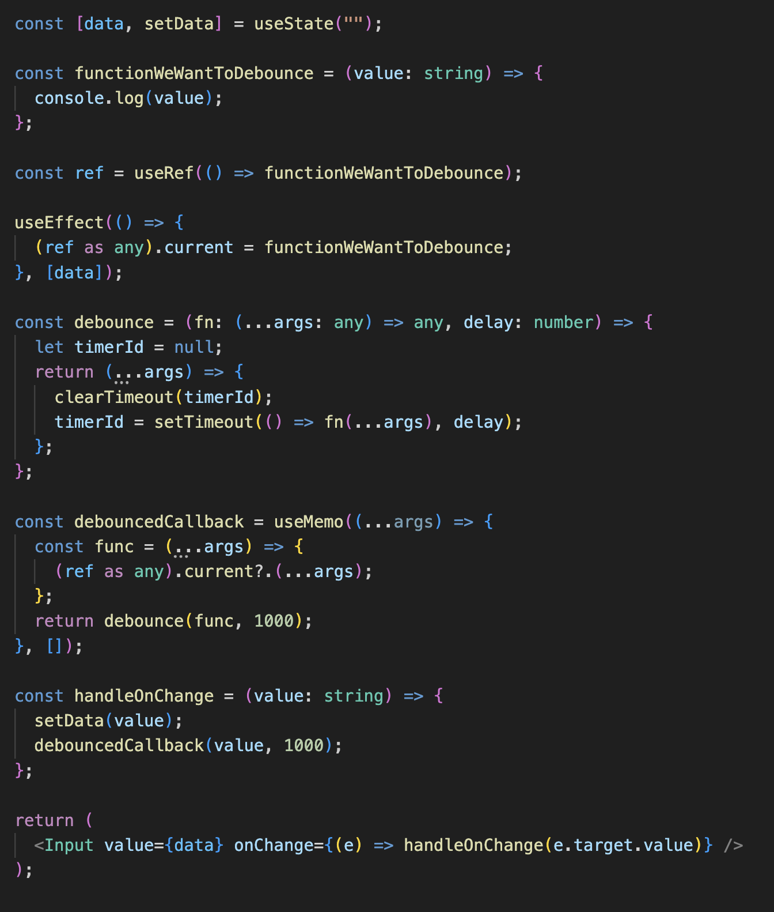

Debouncing & Throttling in React
What is it exactly? Where and why is it used?
The "What"
In essence, when we require a function to execute following a specified
delay period, we refer to this as "debouncing." To illustrate, consider
a scenario where a user is typing, and once they pause, we intend to
initiate a fetch API request. This concept is known as debouncing. You
may have encountered this behavior while utilizing search forms for
worldwide university searches.
Furthermore, think of a situation where a user continues typing incessantly without pausing. In such instances, we may need to trigger fetch API requests at defined intervals, regardless of whether the user halts or persists. This concept is termed "throttling."
Alright, let's simplify this. Debouncing and throttling are kind of similar. For the rest of this blog, when I talk about debouncing, it also applies to throttling. So, I'll just focus on explaining debouncing.
Furthermore, think of a situation where a user continues typing incessantly without pausing. In such instances, we may need to trigger fetch API requests at defined intervals, regardless of whether the user halts or persists. This concept is termed "throttling."
Alright, let's simplify this. Debouncing and throttling are kind of similar. For the rest of this blog, when I talk about debouncing, it also applies to throttling. So, I'll just focus on explaining debouncing.
Debouncing might appear simple at first glance. We basically encase our
function within a "setTimeout." But hold on a moment – when has React
ever been a walk in the park? Yet, once you grasp the concept, it
becomes quite straightforward.
Now, let's tackle the question at hand. If we put our function inside a "setTimeout," it will run after a set amount of time, and the timer won't restart. Take a look at the example below.
Now, let's tackle the question at hand. If we put our function inside a "setTimeout," it will run after a set amount of time, and the timer won't restart. Take a look at the example below.
This situation is quite straightforward to comprehend – the reason it's
not functioning as expected is that it's simply following its
instructions. It's been instructed to update the data value after
waiting for 1 second (1000 milliseconds). However, this isn't the
debouncing behavior we're aiming for. We somehow need to reset the timer
back to 1 second each time the user stops typing.
You can find a tons of resources on the internet explaining how debouncing works with React. I recently encountered a hurdle while incorporating this technique into one of my projects. I hit a point where I felt stuck and didn't know how to proceed. After some searching around, I stumbled upon a helpful solution.
In my project, I had a specific goal: I wanted to save whatever text the user had typed, but only when they paused in their typing. During my online research, I consistently came across a particular piece of code used for debouncing:
You can find a tons of resources on the internet explaining how debouncing works with React. I recently encountered a hurdle while incorporating this technique into one of my projects. I hit a point where I felt stuck and didn't know how to proceed. After some searching around, I stumbled upon a helpful solution.
In my project, I had a specific goal: I wanted to save whatever text the user had typed, but only when they paused in their typing. During my online research, I consistently came across a particular piece of code used for debouncing:
This is how it will wrap our code:
Seems quite robust, doesn't it? But here's the catch – it doesn't
actually function as intended. Debouncing appears to be on track, as the
'timerId' is being reset as expected. However, there's an issue: the
data is getting updated with a delay, which is not what we want.
Now, let's dive into what's happening here. Why is it failing to work? The solution is rather straightforward – our data is being updated within the 'handleOnChange' function, which is nested inside the debounce function. It's quite evident that the data update itself is being debounced!
The fix appears to be straightforward: we just need to figure out a way to remove the setData function from within the debounce wrapper!
Inside the debounce wrapper, we should only keep the specific functionality that we want to debounce. Let's do it:
Now, let's dive into what's happening here. Why is it failing to work? The solution is rather straightforward – our data is being updated within the 'handleOnChange' function, which is nested inside the debounce function. It's quite evident that the data update itself is being debounced!
The fix appears to be straightforward: we just need to figure out a way to remove the setData function from within the debounce wrapper!
Inside the debounce wrapper, we should only keep the specific functionality that we want to debounce. Let's do it:
At this point, everything appears to be in order, and there's a strong
expectation that this solution will indeed be effective. After all, this
is the precise solution that's commonly found online. The internet is
typically reliable in such matters.
However, after giving it a try, it turns out that it doesn't function as expected.
However, after giving it a try, it turns out that it doesn't function as expected.
Umm. But why? Everything looked fine to me.
My thought process:
Ok. Take a deep breath.
Now. What's happening?
=> So, the data is updating fine, but the debounce function is not.
And, what's wrong with the debounced function?
=> It runs each time with a delay, it doesn't override the previous run, which it is supposed to do.
Hmm. So it seems like its not resetting, more specifically, its not resetting the timerId.
=> Indeed, after staring at screen for a few hours, I found the same.TIMER_ID was always undefined, it is supposed to update with the latest one.
.
.
.
.

My thought process:
Ok. Take a deep breath.
Now. What's happening?
=> So, the data is updating fine, but the debounce function is not.
And, what's wrong with the debounced function?
=> It runs each time with a delay, it doesn't override the previous run, which it is supposed to do.
Hmm. So it seems like its not resetting, more specifically, its not resetting the timerId.
=> Indeed, after staring at screen for a few hours, I found the same.TIMER_ID was always undefined, it is supposed to update with the latest one.
Upon closer examination, I discovered the culprit: it's all about
RE-RENDERING! Once I realized this, I couldn't help but wonder how I
overlooked such a crucial detail. Here's the deal: the moment we
trigger the onChange event and set the data to the new value, the
component undergoes a re-render, causing the timerId to vanish.
Without the timerId, there's no resetting, and consequently, no
debouncing.
However, I wasn't ready to give up just yet. I believed there had to be a solution – after all, how challenging could it be? So, I delved into my search once more. To my surprise, everything I came across pointed towards the prebuilt "debounce" function in the lodash library. Undoubtedly, it simplifies matters, but I wanted to create my own custom debouncing wrapper function.
However, I wasn't ready to give up just yet. I believed there had to be a solution – after all, how challenging could it be? So, I delved into my search once more. To my surprise, everything I came across pointed towards the prebuilt "debounce" function in the lodash library. Undoubtedly, it simplifies matters, but I wanted to create my own custom debouncing wrapper function.
So, I had a realization: the issue isn't really about re-rendering;
it's more about creating a new debounce function every time a
re-render occurs. After gazing at my screen for an additional 2 hours,
it hit me.
I can create a reference of my debounce function using useRef. This should surely give me the previous function. Let’s try this code:
I can create a reference of my debounce function using useRef. This should surely give me the previous function. Let’s try this code:
Complete code:
Look at it, it looks so sweet!ü•∫
I was so confident with this one! I knew it was the one!
And as it turned out, I celebrated too soon it didn't work!
I was so confident with this one! I knew it was the one!
And as it turned out, I celebrated too soon it didn't work!
What is wrong now?
It seems like my input data is not changing. And it is stuck at the initial point.
But why ?
Ok. After looking at the screen for another hour, I came to a realization. Our debounce function is invoked just once – during the mounting of our component and the initialization of the ref. To put it differently, if I were to log data within my debounce function, it would remain fixed at the initial value and appear as if it's not changing.
But here's the interesting part. I can write a useEffect with "data" as a dependency. This would allow me to update my ref to the latest version of 'functionWeWantToDebounce'. Let's quickly try this:
It seems like my input data is not changing. And it is stuck at the initial point.
But why ?
Ok. After looking at the screen for another hour, I came to a realization. Our debounce function is invoked just once – during the mounting of our component and the initialization of the ref. To put it differently, if I were to log data within my debounce function, it would remain fixed at the initial value and appear as if it's not changing.
But here's the interesting part. I can write a useEffect with "data" as a dependency. This would allow me to update my ref to the latest version of 'functionWeWantToDebounce'. Let's quickly try this:
But now my debouncing doesn't work. Of course it won't, I am resetting
the function on every data change
So we're back to square one!
So we're back to square one!
.
.
.
.
Now what?
After staring at my screen for another 4 hours (and crying a bit) I found a hint
warning: burst of thoughts ahead
We know that, in JavaScript, objects are mutable (can change). And only primitive values, like numbers or references to objects, will be “frozen” when a closure is created. If in our “frozen” (immutable) sendRequest function I will try to access ref.current, which is by definition mutable, I will get the latest version of it all the time! I have a gut feeling that this will work!
Let's write code first, and then I'll explain:
After staring at my screen for another 4 hours (and crying a bit) I found a hint
warning: burst of thoughts ahead
We know that, in JavaScript, objects are mutable (can change). And only primitive values, like numbers or references to objects, will be “frozen” when a closure is created. If in our “frozen” (immutable) sendRequest function I will try to access ref.current, which is by definition mutable, I will get the latest version of it all the time! I have a gut feeling that this will work!
Let's write code first, and then I'll explain:
And voila! It works!

So what's happening here? How did it work?
1. I made a function called "functionWeWantToDebounce" that triggers a re-render every time it's used. To manage this function, I also set up a reference (let's call it "ref").
2. Then, I established another function called "debouncedCallback." This debounced function is only created a single time, specifically during the component's initial mounting.
3. Lastly, I provided a separate function (to the debounced function) that can access the most current value in the "ref." This "ref" actually holds the latest version of "functionWeWantToDebounce." This way, everything works smoothly together.
Now, the only remaining task is to craft a simple yet effective hook.
This hook will package everything mentioned earlier and will be
conveniently accessible to envelop our functions wherever needed. Let's
go ahead and get that done!
Sweeeeeet! I hope you like reading this blog / painful story.
I wish you all the best!
Let's debounce!
I wish you all the best!
Let's debounce!